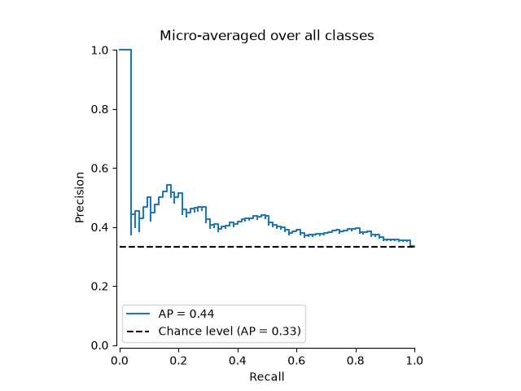
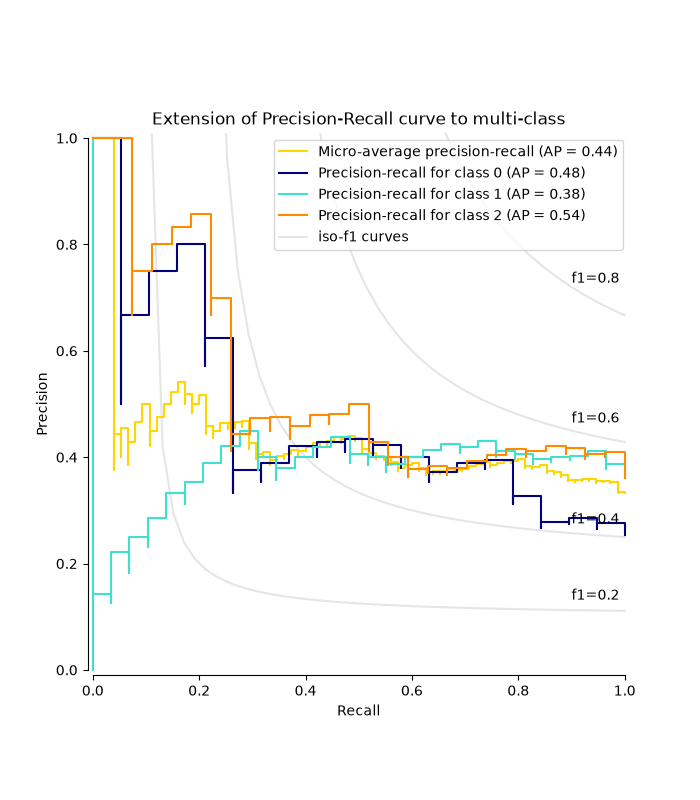

Example of Precision-Recall metric to evaluate classifier output quality.
Precision-Recall is a useful measure of success of prediction when the
classes are very imbalanced. In information retrieval, precision is a
measure of the fraction of relevant items among actually returned items while recall
is a measure of the fraction of items that were returned among all items that should
have been returned. ‘Relevancy’ here refers to items that are
positively labeled, i.e., true positives and false negatives.
Precision (\(P\)) is defined as the number of true positives (\(T_p\))
over the number of true positives plus the number of false positives
(\(F_p\)).
\[P = \frac{T_p}{T_p+F_p}\]
Recall (\(R\)) is defined as the number of true positives (\(T_p\))
over the number of true positives plus the number of false negatives
(\(F_n\)).
\[R = \frac{T_p}{T_p + F_n}\]
The precision-recall curve shows the tradeoff between precision and
recall for different thresholds. A high area under the curve represents
both high recall and high precision. High precision is achieved by having
few false positives in the returned results, and high recall is achieved by
having few false negatives in the relevant results.
High scores for both show that the classifier is returning
accurate results (high precision), as well as returning a majority of all relevant
results (high recall).
A system with high recall but low precision returns most of the relevant items, but
the proportion of returned results that are incorrectly labeled is high. A
system with high precision but low recall is just the opposite, returning very
few of the relevant items, but most of its predicted labels are correct when compared
to the actual labels. An ideal system with high precision and high recall will
return most of the relevant items, with most results labeled correctly.
The definition of precision (\(\frac{T_p}{T_p + F_p}\)) shows that lowering
the threshold of a classifier may increase the denominator, by increasing the
number of results returned. If the threshold was previously set too high, the
new results may all be true positives, which will increase precision. If the
previous threshold was about right or too low, further lowering the threshold
will introduce false positives, decreasing precision.
Recall is defined as \(\frac{T_p}{T_p+F_n}\), where \(T_p+F_n\) does
not depend on the classifier threshold. Changing the classifier threshold can only
change the numerator, \(T_p\). Lowering the classifier
threshold may increase recall, by increasing the number of true positive
results. It is also possible that lowering the threshold may leave recall
unchanged, while the precision fluctuates. Thus, precision does not necessarily
decrease with recall.
The relationship between recall and precision can be observed in the
stairstep area of the plot - at the edges of these steps a small change
in the threshold considerably reduces precision, with only a minor gain in
recall.
Average precision (AP) summarizes such a plot as the weighted mean of
precisions achieved at each threshold, with the increase in recall from the
previous threshold used as the weight:
\(\text{AP} = \sum_n (R_n - R_{n-1}) P_n\)
where \(P_n\) and \(R_n\) are the precision and recall at the
nth threshold. A pair \((R_k, P_k)\) is referred to as an
operating point.
AP and the trapezoidal area under the operating points
(sklearn.metrics.auc) are common ways to summarize a precision-recall
curve that lead to different results. Read more in the
User Guide.
Precision-recall curves are typically used in binary classification to study
the output of a classifier. In order to extend the precision-recall curve and
average precision to multi-class or multi-label classification, it is necessary
to binarize the output. One curve can be drawn per label, but one can also draw
a precision-recall curve by considering each element of the label indicator
matrix as a binary prediction (micro-averaging).
We will use a Linear SVC classifier to differentiate two types of irises.
importnumpyasnpfromsklearn.datasetsimportload_irisfromsklearn.model_selectionimporttrain_test_splitX,y=load_iris(return_X_y=True)# Add noisy featuresrandom_state=np.random.RandomState(0)n_samples,n_features=X.shapeX=np.concatenate([X,random_state.randn(n_samples,200*n_features)],axis=1)# Limit to the two first classes, and split into training and testX_train,X_test,y_train,y_test=train_test_split(X[y<2],y[y<2],test_size=0.5,random_state=random_state)
Linear SVC will expect each feature to have a similar range of values. Thus,
we will first scale the data using a
StandardScaler.
Pipeline(steps=[('standardscaler', StandardScaler()),
('linearsvc',
LinearSVC(random_state=RandomState(MT19937) at 0x79B8E93DA640))])
In a Jupyter environment, please rerun this cell to show the HTML representation or trust the notebook. On GitHub, the HTML representation is unable to render, please try loading this page with nbviewer.org.
for plotting multiple curves using cross-validation results:
from_cv_results
Let’s first plot the precision-recall curve without the classifier
predictions. We use
from_estimator that
computes the predictions for us before plotting the curve.
We create a multi-label dataset, to illustrate the precision-recall in
multi-label settings.
fromsklearn.preprocessingimportlabel_binarize# Use label_binarize to be multi-label like settingsY=label_binarize(y,classes=[0,1,2])n_classes=Y.shape[1]# Split into training and testX_train,X_test,Y_train,Y_test=train_test_split(X,Y,test_size=0.5,random_state=random_state)
The average precision score in multi-label settings#
fromsklearn.metricsimportaverage_precision_score,precision_recall_curve# For each classprecision=dict()recall=dict()average_precision=dict()foriinrange(n_classes):precision[i],recall[i],_=precision_recall_curve(Y_test[:,i],y_score[:,i])average_precision[i]=average_precision_score(Y_test[:,i],y_score[:,i])# A "micro-average": quantifying score on all classes jointlyprecision["micro"],recall["micro"],_=precision_recall_curve(Y_test.ravel(),y_score.ravel())average_precision["micro"]=average_precision_score(Y_test,y_score,average="micro")
fromcollectionsimportCounterdisplay=PrecisionRecallDisplay(recall=recall["micro"],precision=precision["micro"],average_precision=average_precision["micro"],prevalence_pos_label=Counter(Y_test.ravel())[1]/Y_test.size,)display.plot(plot_chance_level=True,despine=True)_=display.ax_.set_title("Micro-averaged over all classes")

Plot Precision-Recall curve for each class and iso-f1 curves#
fromitertoolsimportcycleimportmatplotlib.pyplotasplt# setup plot detailscolors=cycle(["navy","turquoise","darkorange","cornflowerblue","teal"])_,ax=plt.subplots(figsize=(7,8))f_scores=np.linspace(0.2,0.8,num=4)lines,labels=[],[]forf_scoreinf_scores:x=np.linspace(0.01,1)y=f_score*x/(2*x-f_score)(l,)=plt.plot(x[y>=0],y[y>=0],color="gray",alpha=0.2)plt.annotate("f1={0:0.1f}".format(f_score),xy=(0.9,y[45]+0.02))display=PrecisionRecallDisplay(recall=recall["micro"],precision=precision["micro"],average_precision=average_precision["micro"],)display.plot(ax=ax,name="Micro-average precision-recall",curve_kwargs={"color":"gold"})fori,colorinzip(range(n_classes),colors):display=PrecisionRecallDisplay(recall=recall[i],precision=precision[i],average_precision=average_precision[i],)display.plot(ax=ax,name=f"Precision-recall for class {i}",curve_kwargs={"color":color},despine=True,)# add the legend for the iso-f1 curveshandles,labels=display.ax_.get_legend_handles_labels()handles.extend([l])labels.extend(["iso-f1 curves"])# set the legend and the axesax.legend(handles=handles,labels=labels,loc="best")ax.set_title("Extension of Precision-Recall curve to multi-class")plt.show()

Total running time of the script: (0 minutes 0.512 seconds)